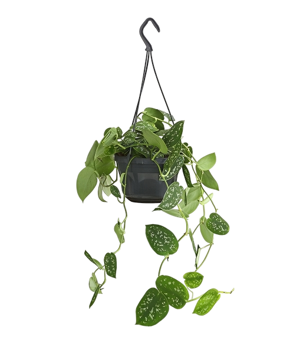

<aside id="profileDrawer" class="profile-drawer" aria-label="Profile & Settings Menu" aria-hidden="true">
  <!-- Thin Branch Stick + Hover-Swaying Hanging Pothos Plant (`flower_2.png`) -->
  <div class="drawer-plant-stage" aria-hidden="true">
    <div class="drawer-branch-stick"></div>
    
  </div>

  <!-- Top User Avatar + Real Database Username -->
  <div class="drawer-user-header">
    <button
      type="button"
      id="drawerAvatarCloseBtn"
      class="drawer-avatar-ring"
      title="Close Profile Menu"
      aria-label="Close Profile Menu"
    >
      <span id="drawerInitialText">U</span>
      
    </button>
    <div id="drawerUsernameText" class="drawer-username">Loading...</div>
  </div>

  <!-- 4 Menu Items with `<` Chevron Arrow Heads -->
  <nav class="drawer-arrow-nav">
    <button type="button" class="drawer-arrow-link" data-page="profile">
      <svg class="chevron-arrow" width="18" height="18" viewBox="0 0 24 24" fill="none" stroke="currentColor" stroke-width="3.2" stroke-linecap="round" stroke-linejoin="round" aria-hidden="true">
        <polyline points="15 18 9 12 15 6" />
      </svg>
      <span>profile setting</span>
    </button>

    <button type="button" class="drawer-arrow-link" data-page="cursor">
      <svg class="chevron-arrow" width="18" height="18" viewBox="0 0 24 24" fill="none" stroke="currentColor" stroke-width="3.2" stroke-linecap="round" stroke-linejoin="round" aria-hidden="true">
        <polyline points="15 18 9 12 15 6" />
      </svg>
      <span>cursor setting</span>
    </button>

    <button type="button" class="drawer-arrow-link" data-page="contact">
      <svg class="chevron-arrow" width="18" height="18" viewBox="0 0 24 24" fill="none" stroke="currentColor" stroke-width="3.2" stroke-linecap="round" stroke-linejoin="round" aria-hidden="true">
        <polyline points="15 18 9 12 15 6" />
      </svg>
      <span>contact us</span>
    </button>

    <button type="button" class="drawer-arrow-link" data-page="feedback">
      <svg class="chevron-arrow" width="18" height="18" viewBox="0 0 24 24" fill="none" stroke="currentColor" stroke-width="3.2" stroke-linecap="round" stroke-linejoin="round" aria-hidden="true">
        <polyline points="15 18 9 12 15 6" />
      </svg>
      <span>feedback</span>
    </button>
  </nav>

  <!-- Full-Width Rectangular Forest-Green Logout Button Above the 4 Circles -->
  <div class="drawer-footer">
    <button type="button" id="sidebarLogoutBtn" class="drawer-logout-btn">Logout</button>
  </div>
</aside>